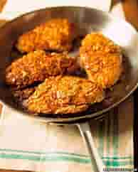

Almond-Crusted Chicken

Ingredients
Switch to Steps
Chicken
-
1 Egg
-
1/4 cup Seasoned Breadcrumbs
-
1 cup Almonds
-
4 Boneless, Skinless Chicken Breasts
-
5 oz Grated Parmesan Cheese
Sauce
-
1 tsp Minced Garlic
-
1/3 cup Finely Chopped Onions
-
2 Tpsp Oil
-
1 cup White Wine
-
1/4 cup Teriyaki Sauce
Steps
Switch to Ingredients
-
Preheat oven to 350F.
-
Place egg and 1 tsp water in shallow bowl and beat.
-
In another shallow bowl, combine breadcrumbs and almonds.
-
Dip each chicken breast in egg, then in almond mixture and place in greased 9"x13" baking pan.
-
Bake uncovered for 20 minutes.
-
Remove chicken from oven and sprinkle Parmesan cheese over each breast.
-
Return to oven and bake another 15 minutes or until almonds and cheese are golden brown.
-
In saucepan, saute garlic and onion in oil.
-
Add wine and teriyaki sauce and bring to boil.
-
Reduce heat and simmer for about 10 minutes or until mixture is reduced to half.
-
WHen serving, divide sauce among 4 plates and place chicken breasts on top.